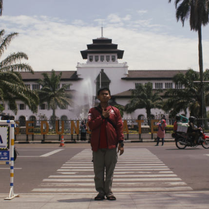

Profile
Tentang Saya

Ahmad Sabilil Maromi
Berikut sedikit biografi mengenai saya selaku penulis blog ini
Saya dilahirkan di Kabupaten Jepara pada Desember Akhir. Saya memulai pendidikan saya di Desa tecinta yakni di SD N 1 Purwogondo (Lulus pada Tahun 2011) dilanjutkan ke SMP N 1 Kalinyamatan(Lulus pada Tahun 2014). Kemudian menghabiskan masa SMA saya di SMA N 1 Pecangaan(Lulus pada Tahun 2017). Walau latar belakang pendidikan saya yang tidak berada di SMA Favorit Kabupaten Jepara namun saya bisa melanjutkan Studi saya di S1 Program Studi Informatika UNS hingga sekarang ini.(Masuk Tahun 2017)
Untuk informasi lebih lanjut, silahkan kunjungi Media Sosial saya di bagian samping kanan Blog ini